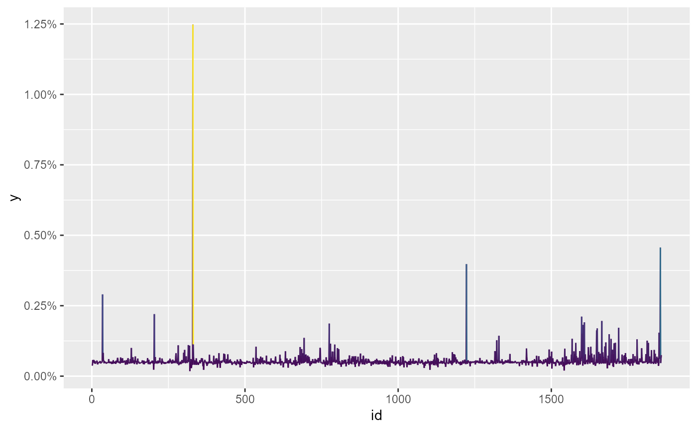

This function uses entropy-pooling to match different decay-factors on the covariance matrix.
double_decay(x, slow, fast)
# S3 method for default
double_decay(x, slow, fast)
# S3 method for numeric
double_decay(x, slow, fast)
# S3 method for matrix
double_decay(x, slow, fast)
# S3 method for ts
double_decay(x, slow, fast)
# S3 method for xts
double_decay(x, slow, fast)
# S3 method for tbl
double_decay(x, slow, fast)
# S3 method for data.frame
double_decay(x, slow, fast)An univariate or a multivariate distribution.
A number with the long half-life (slow decay) for the correlation matrix.
A number with the short-life (high decay) for the volatility.
A numerical vector of class ffp with the new
probabilities distribution.
De Santis, G., R. Litterman, A. Vesval, and K. Winkelmann, 2003, Covariance matrix estimation, Modern investment management: an equilibrium approach, Wiley.
# \donttest{
library(ggplot2)
slow <- 0.0055
fast <- 0.0166
ret <- diff(log(EuStockMarkets))
dd <- double_decay(ret, slow, fast)
#> Checking gradients of objective function.
#> Derivative checker results: 14 error(s) detected.
#>
#> eval_grad_f[ 1, 1 ] = 6.321206e-01 ~ 6.321204e-01 [2.737810e-07]
#> * eval_grad_f[ 2, 1 ] = -2.398728e-04 ~ -2.403893e-04 [2.148615e-03]
#> * eval_grad_f[ 3, 1 ] = -3.008885e-04 ~ -3.013760e-04 [1.617637e-03]
#> * eval_grad_f[ 4, 1 ] = -1.607832e-04 ~ -1.612939e-04 [3.166379e-03]
#> * eval_grad_f[ 5, 1 ] = -1.589184e-04 ~ -1.593977e-04 [3.006898e-03]
#> * eval_grad_f[ 6, 1 ] = 1.463757e-04 ~ 1.459830e-04 [2.690462e-03]
#> * eval_grad_f[ 7, 1 ] = 1.140660e-04 ~ 1.136474e-04 [3.682902e-03]
#> * eval_grad_f[ 8, 1 ] = 1.116638e-04 ~ 1.112260e-04 [3.936303e-03]
#> * eval_grad_f[ 9, 1 ] = 8.755947e-05 ~ 8.707866e-05 [5.521498e-03]
#> * eval_grad_f[ 10, 1 ] = 1.342248e-04 ~ 1.337938e-04 [3.221228e-03]
#> * eval_grad_f[ 11, 1 ] = 9.917786e-05 ~ 9.870902e-05 [4.749719e-03]
#> * eval_grad_f[ 12, 1 ] = 7.904436e-05 ~ 7.853657e-05 [6.465601e-03]
#> * eval_grad_f[ 13, 1 ] = 1.220189e-04 ~ 1.216196e-04 [3.283862e-03]
#> * eval_grad_f[ 14, 1 ] = 7.829443e-05 ~ 7.782876e-05 [5.983233e-03]
#> * eval_grad_f[ 15, 1 ] = 8.897954e-05 ~ 8.863583e-05 [3.877798e-03]
#> eval_grad_f[ 16, 1 ] = 6.321206e-01 ~ 6.321204e-01 [2.737810e-07]
#>
dd
#> <ffp[1859]>
#> 0.000382503 0.0004125523 0.0006256559 0.0004655484 0.0005505896 ... 0.0007095495
autoplot(dd) +
scale_color_viridis_c()

# }